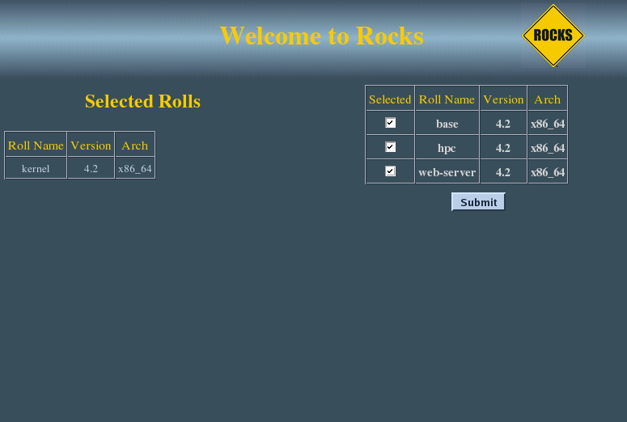

The python roll should be installed during the initial installation of your server (or cluster). This procedure is documented in section 1.2 of the Rocks® usersguide. You should select the python roll from the list of available rolls when you see a screen that is similar to the one below.
